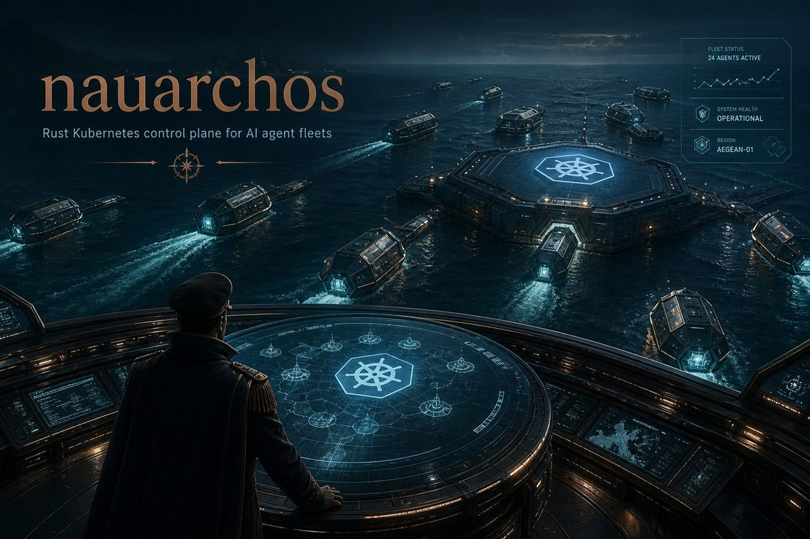

Agent pipeline
Issues in, agents out
An issue opened on GitHub or GitLab is triaged by a small model, escalated when confidence is low, and, if it is real work, handed to a coding agent inside a fresh Coder workspace. The result comes back as a comment on the issue.
- WebhookGitHub / GitLab issue
- Triagegpt-5-nano, escalate below 0.7
- BerthFresh Coder workspace
- DispatchCursor CLI coding agent
- ReportComment and label